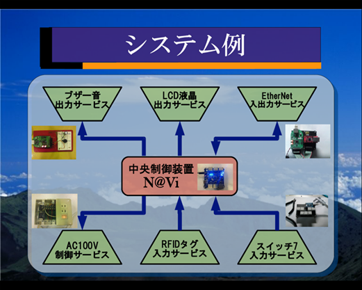
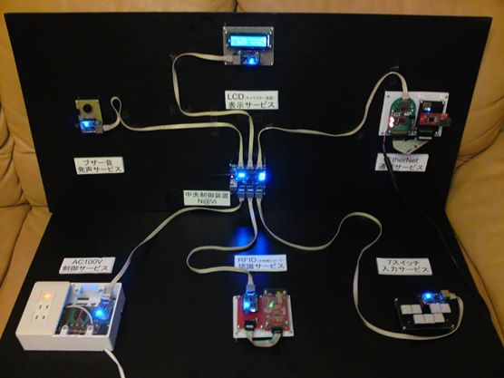
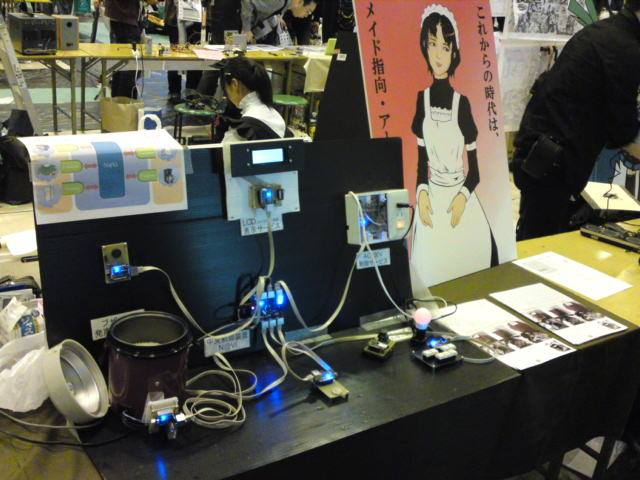

Elpis FrameWork¶
概要¶
Elpisフレームワークを一行で説明すれば、
「ハードウェアをWebAPIとして扱う事が出来るフレームワーク」
になります。
また、『Elpisとは、ハードウェアをWebAPIとして提供するサービスプラットフォーム』
と言う表現も正しいかもしれません。
- Elpisの語源は、ギリシャ神話にでてくる禁断の箱”パンドラ “に残された希望という名です。
私たちは度重なる難解なシステムを開発してきましたが、その度に私たちは暗闇の中を手探りに探し、非常に苦労しました。 そこで私たちは神話のElpisの名の通り、システム開発の上で希望の光になるべくElpisフレームワークの開発を行っております。
Elpis-FrameWork ついて¶
Elpisフレームワークには以下の禅があります。
1：システムをＡＰＩ単位に分解し、API単位で開発を行うこと。
２：各ＡＰＩには必ずドキュメントを作成し、いつでも使える情報を乗せる事
３：各ＡＰＩには動作チェック用アプリと連携確認用アプリを用意すること。
４：以上の内容が常に最新であることを心がけること。
このElpisフレームワークの禅が、システム開発において闇に捕らわれた時に光となる事を私たちは信じています。
現在・提供中のElpis-API¶
準備中のElpis-API¶
なぜElpisを作ったのですか？¶
『世の中のハードウェアを、Webからアクセス出来る様になれば世の中がより便利になるんじゃないかな・・・』
Elpisが誕生した経緯は、以前私たちは「小さなキット同士を組み合わせてより大きなシステムを構築できる仕組み」を研究していました。 マイコン同士を組み合わせて、うまくそれらを管理すれば、大規模なシステムだって動かせるはずだ！と言う思想で開発を続けていました。 そして、私たちは小さなキットを組み合わせていくにつれて、思いの外、大きなシステムを構築出来ました。 当時得た成果と共に、私たちは恐ろしさをも感じました。 そこで私たちは、開けては成らぬ箱であるパンドラの名を借り、「パンドラキット」と命名しました。
パンドラキットの開発は３年かかりました。３年でひとまず完成と限界が見えてきました。 確かにパンドラキットは小中規模のシステムを作ることが出来る仕組みではありましたが、設定の細かさ開発の難しさ、安定さ速度と言った多くの問題も含んでおりました。 そこで、私たちは一旦パンドラキットの開発を止めて、パンドラキットの利点欠点や問題点を徹底的に解析しました。 その作業は名の通り、パンドラの箱を開けたような絶望的なバグや解決困難な問題点が大量にでてきました。 私たちは暗い闇の中を二年ほどかけて問題の解決に勤しみました。
  この暗闇の２年間はいろんな事を学びました。パンドラキットは元々ハードウェアを組み合わせる事を意識して設 計していましたが、 ハードウェア意外のソフトウェアやシステムウェア等、ほかの分野でも「ブロック同士をつなげてより大規模な仕組みを創る」と言う手法が凄く当然のように取り入れられていました。 そのため、私たちはパンドラキットの経験を生かしハードウェア以外のシステム開発にも力を注ぎ挑戦を行いましたが、案の定、暗闇から抜け出すことは出来ませんでした。
そんな暗闇の二年間の中で、ハードウェアとの連携も出来て、ほかのソフトウェアとも連携が出来て、さらにテストやデバッグがしやすい、 システム開発で暗闇に捕らわれても、目的を忘れず希望の光が見える新しい開発スタイルをあみだそうと考えました。
そして見えてきた答えが、希望の名を持つElpisフレームワークです。
Elpis-FWのロードマップ¶
準備中

{kind=link}
{kind=link}
{kind=link}
連絡先¶
本記事の内容及び技術的ご質問について info@artifactnoise.com までご連絡ください。
ビジネスのお問い合わせ、共同開発のお問い合わせ等も、info@artifactnoise.com までご連絡ください。
管理情報¶
| 初版: | 2013/07/11 |
|---|---|
| 改版: | 2014/03/16 |
| 改版: | 2014/07/22 |
| 作成者: | ArtifactNoise http://artifactnoise.com |
| 分類: | Elpis |
| 開発参加者: | Yuta Kitagami , Shota Koshimizu. |